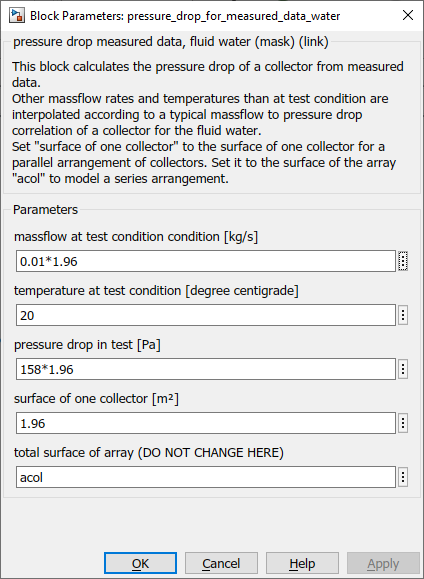

pressure_drop_for_measured_data_water
Path: CARNOT/Basic/Pressure_Drop
Purpose:
The block calculates the pressure drop of a solar thermal collector on the basis
of measured data.
Description:
This block calculates the pressure drop of a collector from a fitted parabolic
curve. Other temperatures than at test condition (20°C) are interpolated
according to a typical pressure drop correlation of a collector for the fluid
water (see look-up table "T-correction fluid water" under the mask).
The block is dedicated to a use in the collector model. Therefor the collector surface
is passed as a parameter "acol". Set "surface of one collector" to the surface
of one collector for a parallel arrangement of collectors. Set it to the surface of the
array "acol" to model a series arrangement.
Give parameters in SI-units.
Multiply with 3.6e5 to convert from [mbar/(liter/hour)] to [Pa/(kg/s)]
Multiply with 1.296e+9 to convert form [mbar/(liter/hour)2]
to [Pa/(kg/s)2].
Input:
| T | : | temperature in °C |
| mdot | : | mass flow in kg/s |
| p | : | pressure at the inlet of the collector in Pa |
| lin_qua | : | vector with linear and quadratic pressure drop coefficients |
Output:
| p_out | : | pressure at the outlet of the collector in Pa |
| lq_out | : | vector with linear and quadratic pressure drop coefficients including the values given at input lin_qua and the coefficients of the collector itself |
Parameters and Dialog Box:

Examples:
Open the example explorer from the Matlab command window
ExampleBrowser
or load the examples via the CARNOT library.
Characteristics:
| Direct Feedthrough | : | Yes |
| Sample Time | : | Inherited from driving block |
| Vectorized | : | No |